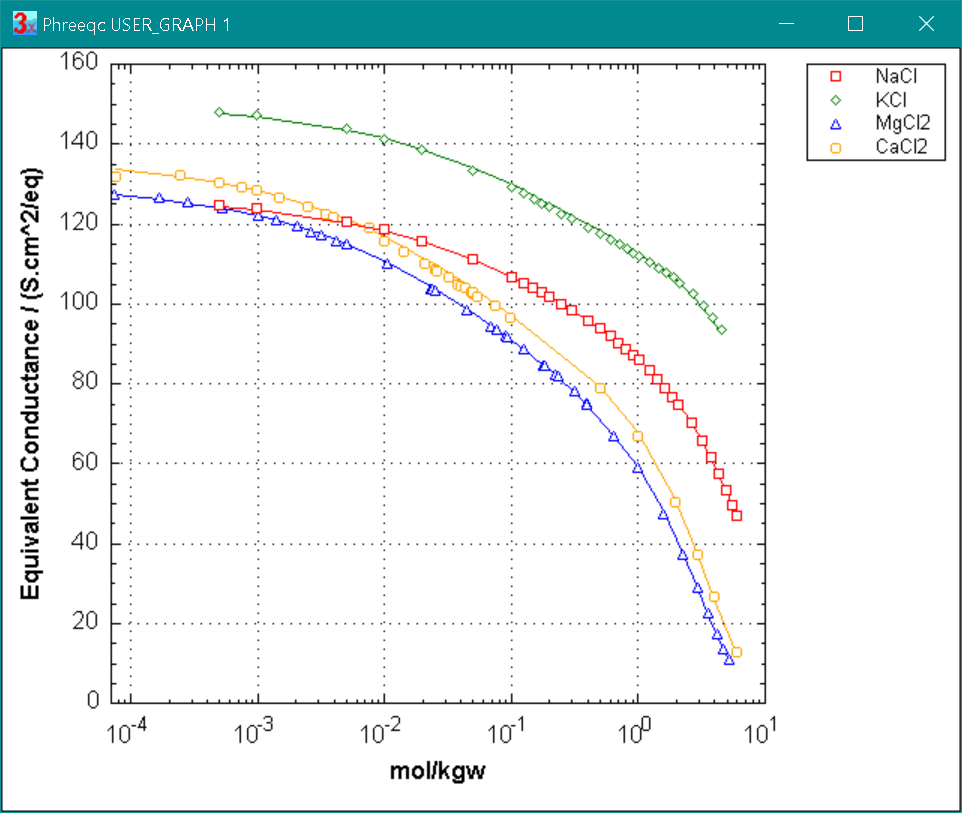
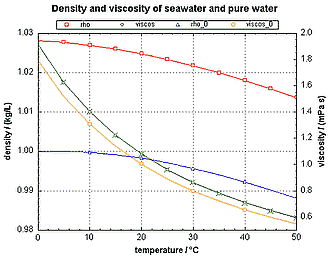
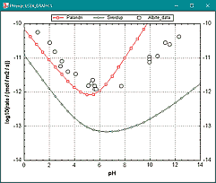

PHREEQC release notes
Pre-release notes
Updated PHREEQC.DAT: SOLUTION_SPECIES: F-, NaF, KF
Updated PITZER.DAT: SOLUTION_SPECIES: SO4-2
Updated PHREEQC.DAT: SOLUTION_SPECIES: SO4-2, NaSO4-, Na2SO4, KSO4-, MgSO4, Mg(SO4)2-2, AmmHSO4-
Modified viscosity parameters for Br-, using high temperature data from Abdulagatov and Azizov, 2006, J.S.C. 35, 705 (NaBr), and 2008, J.S.C 37, 3 (KBr).
New option -use_phreeqc_dha_dhb [True or False] was added to the keyword data block LLNL_AQUEOUS_MODEL_PARAMETERS:
LLNL_AQUEOUS_MODEL_PARAMETERS
-use_phreeqc_dha_dhb True
▪ Debye-Hückel A and B values and the density of pure water are calculated pressure- and temperature-dependent as done with phreeqc.dat and pitzer.dat
▪ the value of bdot can be defined for individual SOLUTE_SPECIES as in phreeqc.dat with -gamma adot bdot
▪ the density of the solution is calculated using the molar volume parameters (-Vm) in SOLUTION_SPECIES
▪ the pressure dependence of log K's is calculated from the molar volume parameters in SOLUTION_SPECIES and PHASES
-use_phreeqc_dha_dhb False
▪ gives results as previously with a llnl-type database, i.e.
▫ Debye-Hückel A and B are calculated temperature-dependent by interpolating the numbers in -dh_a and -dh_b in the LLNL_AQUEOUS_MODEL_PARAMETERS
▫ the value of bdot is the same for all aqueous species, from interpolating the numbers in -bdot in the LLNL_AQUEOUS_MODEL_PARAMETERS
▫ -Vm values are not used for calculating the pressure dependence of reactions and, if present, solution densities are not correct
If -use_phreeqc_dha_dhb is written without True or False, True is assumed; if not written at all, the option is False.
The option is useful for calculating the pressure-dependent solubility of solids and gases, and extending the llnl-type database to higher ionic strengths. For example try:
DATABASE c:\phreeqc\database\llnl.dat
LLNL_AQUEOUS_MODEL_PARAMETERS; -use_phreeqc_dha_dhb
# copy from phreeqc.dat...
SOLUTION_SPECIES
Na+ = Na+; -gamma 4.08 0.082; -Vm 2.28 -4.38 -4.1 -0.586 0.09 4 0.3 52 -3.33e-3 0.566
Cl- = Cl-; -gamma 3.63 0.017; -Vm 4.465 4.801 4.325 -2.847 1.748 0 -0.331 20.16 0 1
Na+ + Cl- = NaCl; -log_k -1e3 # remove this complex
PHASES
Halite; NaCl = Cl- + Na+; log_k 1.57; -delta_h 1.37; -Vm 27.1
SOLUTION; EQUILIBRIUM_PHASES; Halite
REACTION_TEMPERATURE; 0.5, 5, 10, 15, 20, 25, 30, 40, 50, 60, 70, 75, 80, 90, 100, 110, 125, 150, 175, 200, 225, 250, 275
USER_GRAPH; -chart_title "Halite solubility f(T), from Pabalan & Pitzer, 1987"
-axis_titles "Temperature / ºC" "mol NaCl / kgw"
10 data 6.097, 6.099, 6.106, 6.117, 6.131, 6.146, 6.168, 6.216, 6.275, 6.341, 6.416, 6.460, 6.498, 6.587, 6.680, 6.778,\
6.935, 7.198, 7.573, 7.973, 8.435, 8.989, 9.649
20 dim c(23) : for i = 1 to step_no : read c(i) : next i
60 plot_xy tc, tot("Na"), symbol_size = 0, color = Red
70 plot_xy tc, c(step_no), line_width = 0, color = Red
END
USER_GRAPH 1; -active false; USE solution 1; USE equilibrium_phases 1
REACTION_TEMPERATURE; 30
REACTION_PRESSURE; 1, 1, 22, 302, 311, 416, 823, 884, 1230, 1273, 1309, 1435, 1457
USER_GRAPH 2; -chart_title "Halite solubility f(P) at 30ºC, from Villafáfila García, 2005"
-axis_titles "Pressure / bar" "mol NaCl / kgw"
10 data 6.16, 6.17, 6.18, 6.23, 6.23, 6.27, 6.33, 6.33, 6.36, 6.36, 6.36, 6.4, 6.4
20 dim c2(23) : for i = 1 to step_no : read c2(i) : next i
60 plot_xy pressure * 1.013, tot("Na"), symbol_size = 0, color = Red
70 plot_xy pressure * 1.013, c2(step_no), line_width = 0, color = Red
END
|

|
Corrected -Vm of K-mica in PHREEQC.DAT.
Added -Vm and modified -viscosity of SOLUTION_SPECIES HCl in PHREEQC.DAT.
Version 3.8.9, compiled October 13, 2025.
Adapted H2 and Hdg properties in SOLUTION_SPECIES and PHASES in PHREEQC.DAT and PITZER.DAT for improved solubility calculations at high T, P, and I.
File c:\phreeqc\high_P_T\gases\H2.phr compares calculations and measured data.
Revised the data for carbonate species in PHREEQC.DAT and PITZER.DAT for better T, P, and I dependent calcite equilibrium and viscosity calculations:
run the files in c:\phreeqc\high_P_T\appendix_AG15\Calcite.
Updated PITZER.DAT:
- SOLUTION_SPECIES: Mg+2, Ba+2, CO3-2, Hdg, HCO3-, CO2.
- PHASES: Barite, Calcite, CO2(g), Hdg(g) [= H2(g)].
- PITZER:
in -B0, -B1 and -B2: HCO3- Na+
in -THETA: Cl- HCO3-
in -LAMDA: Cl- Hdg, Hdg Mg+2 and Hdg Na+
in -ZETA: Hdg Cl- Na+
in -PSI: Cl- HCO3- Na+
- GAS_BINARY_PARAMETERS: H2O(g) Hdg(g)
Updated PHREEQC.DAT:
- SOLUTION_SPECIES: Mg+2, Ba+2, CO3-2, SO4-2, H2, Hdg, HCO3-, CO2, (CO2)2, CaHCO3+, MgSO4, Mg(SO4)2-2, NaHCO3, KHCO3, removed BaSO4.
- PHASES: Calcite, Barite, CO2(g), H2(g), Hdg(g).
- GAS_BINARY_PARAMETERS: H2O(g) H2(g), H2O(g) Hdg(g)
Revised the viscosity calculation (viscosity(cxxSurface *surf_ptr) in transport.cpp) to avoid a negative viscosity.
Viscosity calculations at temperatures higher than 200ºC now return the viscosity of pure water. In previous versions, the Falkenhagen A factor and the volume factors of the anions were calculated at T, P, I of the solution and used to calculate the viscosity.
Added two options to SIT parameters: -EPSILON1 and -EPSILON2. The total epsilon parameter for a pair of ions is calculated as:
epsilon + epsilon1 * I + epsilon2 * log10(I), where I is ionic strength.
Defined the Na2SO4 complex in PHREEQC.DAT for an improved calculation of the solubilities of anhydrite, gypsum, celestite, barite and other sulfates in concentrated NaCl solutions. The activity parameters (‑gamma and ‑analytical_expression) and the physical parameters (‑Vm, ‑viscosity and ‑dw) were redefined for all the SO42- solution species. The figure compares calculated and experimental results for anhydrite as a function of T and P with the adaptations in PHREEQC.DAT.
The new numbers are in the databases distributed with version 3.8.9: run the files in c:\phreeqc\high_P_T\appendix_AG15.
|

|
Removed the activity of water in the calculation of the density of pure water (rho_0) at T, P in calc_rho_0(LDBLE tc, LDBLE pa) in utilities.cpp (rho_0 is independent of salinity).
Fixed MIX to allow for negative mixing fractions.
In various databases: the Alkalinity of E is set to 1 to give the correct equation for non-master species with e- in the reaction:
SOLUTION_MASTER_SPECIES
E e- 1 0
0
Version 3.8.7, compiled March 12, 2025.
In the output file, the list with the 'Distribution of aqueous species' now includes, in the NPP version:
- The fractional contribution of the species to the viscosity increase (this number can be retrieved with the Basic function f_visc("Ca+2")).
- The transport or transference number of a species (i.e. the fractional contribution to the specific conductance; this number is obtained with the Basic function t_sc("Species_name")).
Bug_fix for calc_t_sc("") in basicsubs.cpp.
Added the database stimela.dat, for use in drinking-water and waste-water treatment from Peter de Moel and Omnisys.
Revised the -Vm parameter for Sr+2 in phreeqc.dat.
Version 3.8.5, compiled November 22, 2024.
Revised the parameters for -Vm, -viscosity and -dw for NH4SO4-.
Bug-fix: The Donnan calculation for a surface was removed in some cases when the first kinetics' step added zero moles. If this happened it could result in an incorrect charge balance of the solution.
New keyword GAS_BINARY_PARAMETERS defines binary interaction coefficients of the gases used in Peng-Robinson calculations.
Calculation of the equivalent conductance of H+ is improved with a correction of the ion-size parameter in PHREEQC.DAT and PITZER.DAT. PITZER.DAT gives results with an AARD < 0.5 % up to 10 M HCl and HBr (data from Hamer and DeWane, 1970, Nat. Stand. Ref. Data Ser. 33).
Version 3.8.3, compiled October 16, 2024.
Revised the multicomponent diffusion calculation of heat and solutes, accounting now for the heat also for the T-dependent viscosity of the solutions (and thus, affecting the diffusion of solutes when temperatures vary).
Corrected spelling errors throughout PHREEQC as supplied by Mike Toews. Modified "lamda" to "lambda" internally as suggested by Toews, but "lamda" and "lambda" are both acceptable in Pitzer database files for backward compatibility.
Fixed bug in MIX that produced erroneous temperature and pressure if the solutions being mixed did not have 1 kg of water.
(Note that PHREEQC does not consider the heat capacity of the solutions when the temperature of the mixture is calculated.)
Version 3.8.2, compiled September 8, 2024.
New basic items PHASE_EQUATION$("Calcite", count, sp$, coef) and SPECIES_EQUATION$("NaHCO3", count, sp$, coef) return a string with the dissolution reaction of the phase or the reaction equation for the species (defined in PHASES or in SOLUTION_SPECIES). The species-names and -coefficients of 'count' species in the formula are in the arrays 'sp$' and 'coef'.
The total moles added in a multicomponent diffusion model are now printed in the output file at the end of the run.
Added variable "viscos_DDL" in EDL("viscos_DDL", "surface_name") to give the viscosity of a Donnan layer on a surface in BASIC.
Note that the "surface_name" should not contain an underscore "_", the Donnan properties are for the surface, not for surface charge, thus use the surface name "Hfo", not "Hfo_w". If "surface_name" is omitted, the viscosity is given for the first surface in the alphabetical order.
The viscosity of the Donnan layer on a surface is printed now in the output file.
Bug-fix: The viscosity of the Donnan layer on a surface is calculated only when defined with "-donnan 1e-7 viscosity calculate". In version 3.8.0 it was calculated at all times, when viscosity terms were read for SOLUTION_SPECIES.
The viscosity calculation was adapted for high concentrations of neutral species and gases. Viscosity parameters for CO2 were added using data from McBride et al., 2015, JCED 60, 171-180. See example c:\phreeqc\viscosity\CO2.phr.
Version 3.8.0, compiled May 29, 2024.
New: accurate calculation of the viscosity (η) and of the specific conductance (SC) in saline water, with temperature and pressure dependence.
PHREEQC_RATES.DAT, a database with kinetic rates from Palandri and Kharaka (2004), Sverdrup et al. (2019) and Hermanská et al. (2022, 2023).
Bug fix in the initial calculation of the density of a solution, which might bypass Oxygen of the species when not defined. The new code prints the correct 1.000e2:
USER_PRINT
10 print 'ppt C: ' tot("C") * tot("water") * gfw("C") / (rho * soln_vol)
SOLUTION 1
-units ppt
-density 1 calculate
pH 3 charge
C(4) 1e2 as C
END
New KEYWORD MEAN_GAMMAS defines salts for which the mean gamma can be retrieved.
For example:
MEAN_GAMMAS
CaCl2 Ca+2 1 Cl- 2
The basic function meang("CaCl2") returns the mean gamma. Note that the same result can be obtained with (gamma("Ca+2") * gamma("Cl-")^2)^(1/3), which does not need MEAN_GAMMAS.
New KEYWORDS were programmed for entering kinetic rate parameters from the tables in Palandri and Kharaka (2004), Sverdrup et al. (2019) and Hermanská et al. (2022, 2023):
RATE_PARAMETERS_PK
RATE_PARAMETERS_SVD
RATE_PARAMETERS_HERMANSKA
The numbers are invoked and returned in a rate in mol/m2/s, for example for Albite, with respectively:
RATE_PK("Albite")
RATE_SVD("Albite")
RATE_HERMANSKA("Albite")
For example:
RATES
Albite_PK # Palandri and Kharaka, 2004
5 REM PARMS: 1 affinity, 2 m^2/mol, 3 roughness, 4 exponent
10 if parm(1) = 1 then affinity = 1 else affinity = 1 - SR("Albite") : if affinity < parm(1) then SAVE 0 : END
20 rate = RATE_PK("Albite")
30 IF M > 0 THEN area = M * parm(2) * parm(3) * (M/M0)^parm(4) ELSE area = 0
40 SAVE area * rate * affinity * TIME
-end
can be called in:
KINETICS 1
Albite_PK
-formula NaAlSi3O8; -parms 0 6 1 0.67
-m0 1; -time 1 # default
The data from the compilations have been copied in PHREEQC_RATES.DAT, together with PHASES listing the minerals, and example input files showing kinetic dissolution of albite, quartz, calcite and montmorillonite, and a comparison of the rate data from the 3 compilations.
For other rate parameters, consider using the subroutines in kinetic_rates.dat and kinetic_rates.phr in c:\phreeqc\database, see Simplifying the definition of kinetic rates for minerals using tabulated data.
New option: The diffusion coefficient of a species can be made a function of the solution viscosity when diffusion is calculated. It is set by the exponent a_v_dif, the 7th number in -dw in SOLUTION_SPECIES.
For example for H+:
SOLUTION_SPECIES
H+ = H+
-viscosity 9.35e-2 -8.31e-2 2.487e-2 4.49e-4 2.01e-2 1.570
-dw 9.31e-9 838 16.315 0.809 2.376 24.01 0.9
# Dw(25 C) dw_T a a2 visc a3 a_v_dif
With a_v_dif = 0.9 in the example, the diffusion coefficient is multiplied by (η0, tc / η)0.9, where η0, tc and η are the viscosities of water and of the solution, respectively, at the temperature of the solution. See Robinson and Stokes, 2002, Chpt 11 for examples.
The Dw and a_v_dif can be set in a USER_ program with setdiff_c("name", Dw, a_v_dif), for example: 10 print setdiff_c("H+", 9.31e-9, 1).
The viscosity effects in solution and Donnan EDL have been introduced in Example 21 of the manual, see C:\phreeqc\exmpls\ex21.phr.
Three subroutines for calculating the kinetic dissolution of silicate minerals have been defined that can be invoked by copying a line of numbers from tables in Palandri and Kharaka (2004), Sverdrup et al. (2019), or Hermanská et al. (2022, 2023). The subroutines can be read in be in a PHREEQC input file with keyword INCLUDE$. For details, see Simplifying the definition of kinetic rates for minerals using tabulated data.
The calculation of the specific conductance can now be done with a Debye-Hückel-Onsager equation that has both the electrophoresis and the relaxation term. (The standard phreeqc calculation uses a simple electrophoretic term only.) For individual ions, the equation can be multiplied with the viscosity ratio of the solvent and the solution, and the ion-size a in the Debye-Hückel term κa can be made a function of the apparent molar volume of the ion. The options are described and used in PHREEQC.DAT and PITZER.DAT.
The additions extend the applicability of the DHO equation to concentrations in the molar range, reducing AARD for SC and transference numbers to less than 1% in many cases. For high KHCO3 concentrations, the SC's indicate the presence of a KHCO3 complex that was added to PHREEQC.DAT.
The figure shows the equivalent conductivity of alkali and alkaline-earth chlorides at 25 oC (symbols are measured values, lines are modeled, example file Equiv_Conduct.phr). The AARD's (average of the absolute relative deviations) are 0.18 % for NaCl, 0.48 % for KCl, 0.51 % for MgCl2 and 0.89 % for CaCl2.
More example files are in c:\phreeqc\SpecConduct.
|

|
Bug-fix: Option -density c[alculate] in SOLUTION_SPREAD was corrected to give the iterated density of the solutions.
New option: The viscosity of the EDL layer on SURFACE(s) can now be calculated and will then be used to modify the diffusion coefficients. It is set by adding c(alculate) after viscosity, for example, "-donnan 1e-8 viscosity calc". It needs the exponent for the viscosity effect on diffusion to be different from 0. This exponent is a_v_dif, the 7th number in -dw in SOLUTION_SPECIES, as noted above.
Bug-fix: Viscosity of the EDL layer on SURFACE(s), defined with, for example, "-donnan 1e-8 viscosity 3", was omitted in Version 3.4.2. It is now re-introduced in the calculations.
Bug-fix: Basic now returns the contributions to the specific conductance (t_sc("H+")) and the viscosity (f_visc("H+")) only when the species is present in the solution. In previous versions a dummy value was returned when the species was predefined, but absent in the actual solution calculation.
Bug-fix: Limits for fugacity coefficients were set to be 0.01 < phi < 85 in Peng-Robinson calculations. The limits were removed in version 3.7 (when calculating H2S(g) solubilities). However, without the limits, all water turned into H2O(g) in some cases and calculations failed.
Added Basic function f_visc("H+") that returns the fractional contribution of a species to viscosity of the solution when parameters are defined for the species with -viscosity. Actually, it gives the contribution of the species to the B and D terms in the Jones-Dole equation, assuming that the A term is small. The fractional contribution can be negative, for example f_visc("K+") is usually smaller than zero.
Bug-fix: When -Vm parameters of SOLUTION_SPECIES were read after -viscosity parameters, the first viscosity parameter was set to 0.
Defined -analytical_expression and -gamma for Na2SO4, K2SO4 and MgSO4 and Mg(SO4)22- species in PHREEQC.dat, fitting the activities from pitzer.dat from 0 - 200 °C, and the solubilities of mirabilite/thenardite (Na2SO4), arcanite (K2SO4), and epsomite, hexahydrite, kieserite (MgSO4 and new species Mg(SO4)22-). The parameters for calculating the apparent volume (-Vm) and the diffusion coefficients (-Dw) of the species were adapted using measured data of density and conductance (SC). Example files are in c:\phreeqc\viscosity\SO4_solubilities.
Removed the NaCO3- complex in PHREEQC.dat since it does not fit the specific conductance measurements of Na2CO3 solutions. And, the complex is negligible in seawater (Millero, 1974, Ann. Review Earth and Planetary Sciences, 2, 101-150).
Defined parameters in the -analytical_expression, -gamma, -dw, -Vm and -viscosity for the NaHCO3 species in PHREEQC.dat, using the data in Appelo, 2015, Appl. Geochem. 55, 62-71. (These data were used for defining interaction parameters in pitzer.dat.)
The parameters for the apparent volume (-Vm), the diffusion coefficient (-Dw) and the viscosity of CO32- and HCO3- were adapted using measured data of density, conductance and viscosity of binary solutions.
The viscosity of the solution at P, T is now calculated and printed in the output file, and can be retrieved in Basic programs with the function viscos (in previous versions, viscos returned the viscosity of pure water at P, T).
The calculation uses a modified Jones-Dole equation which sums the contributions of individual solutes:
η / η0 = 1 + A √(0.5 ∑ zimi) + ∑ fan (Bimi + Dimini),
where η is the viscosity of the solution (mPa s), η0 idem of pure water at the temperature and pressure of the solution, mi is the molality of species i, made dimensionless by dividing by 1 molal, and zi is the absolute charge number.
A is derived from Debye-Hückel theory, and fan, B, D and n are coefficients that incorporate volume, ionic strength and temperature effects.
The coefficients are:
B = b0 + b1 exp(-b2 tc)
where b0..2 are coefficients, and tC is the temperature in ºC. The temperature is limited to 200°C.
fan = (2 - tan Van / VCl-)
for anions, with tan a coefficient and Van the P, T and I dependent, apparent volume of the anion relative to the one of Cl-, which is used as reference species. For cations, fan = 1 and tan needs not be defined.
D = d1 exp(-d2 tC )
where d1, 2 are coefficients.
n = ((1 + fI)d3 + ((zi2 + zi) / 2 · mi)d3 / (2 + fI)
where fI averages ionic strength effects and d3 is a coefficient.
The coefficients are fitted on measured viscosities of binary solutions and entered with item -viscosity under keyword SOLUTION_SPECIES, for example for H+:
SOLUTION_SPECIES
H+ = H+
-viscosity 9.35e-2 -8.31e-2 2.487e-2 4.49e-4 2.01e-2 1.570 0
# b0 b1 b2 d1 d2 d3 tan
When the solute concentrations are seawater-like or higher, the viscosity is different from pure water as shown in the figure (symbols are measured values, lines are modeled, example file seaw.phr). To obtain a valid model for natural waters with phreeqc.dat, the complexes of SO42- with the major cations were redefined, as noted above.
The A parameter in the Jones-Dole equation needs temperature dependent diffusion coefficients of the species, and therefore the parameters for calculating the I and T dependency of the diffusion coefficients (-dw parameters of SOLUTION_SPECIES) were refitted for SO42- and CO32- species.
Example files are in c:\phreeqc\viscosity.
|

|
Implicit calculations with option -fix_current will now account for changing concentrations in the boundary solutions of the column.
Activated the print of statements defined in USER_PRINT when the initial EXCHANGE, SURFACE and GAS_PHASE are calculated.
Changed the dw_t parameter for CO32- to 30 (was 0) and for HCO3- to -150 (was 0) to better fit McCleskey's data
Bug fix: removed the factor (TK / 298.15) from the calculation of the temperature dependence of the diffusion coefficient. For an example, see the calculation of Dw(TK) of H+ in the next paragraph.
Bug fixes in printing/punching of diffusion coefficients with diff_c and setdiff_c: the numbers are now corrected for I and T effects when the appropriate factors are defined in keyword SOLUTION_SPECIES, item -dw. For example:
H+ = H+
-gamma 9.0 0
-dw 9.31e-9 1000 0.46 1e-10 # The dw parameters are defined in Appelo, 2017, CCR 101, 102-113.
It will set Dw(TK) = 9.31e-9 * exp(1000 / TK - 1000 / 298.15) * viscos_0_25 / viscos_0_tc
and Dw(I) = Dw(TK) * exp(-0.46 * DH_A * |zi| * I 0.5 / (1 + DH_B * I 0.5 * 1e-10 / (1 + I 0.75))),
where
viscos_0_25 is the viscosity of pure water at 25 °C, viscos_0_tc is the viscosity of pure water at the temperature of the solution.
DH_A and DH_B are Debye-Hückel parameters, retrievable with PHREEQC Basic.
The temperature correction is always applied in multicomponent, diffusive transport and for calculating the viscosity.
The ionic strength correction is for electro-migration calculations (Appelo, 2017, CCR 101, 102). The correction is applied when the option is set true in TRANSPORT, item -multi_D:
-multi_d true 1e-9 0.3 0.05 1.0 true # multicomponent diffusion
# true/false, default tracer diffusion coefficient (Dw = 1e-9 m2/s) in water at 25 °C (used in case -dw is not defined for a species), porosity (por = 0.3), limiting porosity (0.05) below which diffusion stops, exponent n (1.0) used in calculating the pore-water diffusion coefficient Dp = Dw * por^n, true/false: correct Dw for ionic strength (false by default).
Version 3.7.3: December 2, 2021.
Bug fix of -print_cells and -punch_cells in the ADVECTION data block with ranges of cells defined with "-". For example, the cells defined with
ADVECTION
-punch_cells 1-10 11 12-20
were read incorrectly.
Modified the initial guess of the potential terms for a surface related to a phase, when it comes into existence (when the phase begins to precipitate).
Bug fix in printing/punching of diffusion coefficients with diff_c and setdiff_c: the numbers were not multiplied with TK / 298.15.
Version 3.7.2a: September 14, 2021.
Bug fix in multicomponent diffusion.
Version 3.7.2: August 26, 2021.
Bug fix of implicit calculations with -fix_current, the current and cell potentials were set to 0 after the calculations, before printing/punching.
Added Basic functions for printing/punching mole transfers of solute species from a cell by multicomponent diffusion:
MCD_JTOT("Na+") gives total moles of Na+ diffusing from/into a cell.
MCD_JCONC("Na+") gives moles of Na+ diffusing from/into a cell by the concentration gradients of Na+.
Diffusion is uphill when MCD_JTOT("Na+") * MCD_JCONC("Na+") < 0.
Database update: July 20, 2021.
Improved and extended the solubility model for H2S in PHREEQC.DAT and PITZER.DAT, 0 - 300°C, 1 - 987 atm, using experimental data from Jiang et al., 2020, Chem. Geol. 555, 119816 and Xia et al., 2000, Ind. Eng. Chem. Res. 39, 1064.
Example files are in directory c:\phreeqc\high_P_T.
|

|
Version 3.7.1: July 20, 2021.
Improved the convergence of calculations with GAS_PHASE with numerical derivatives. (Numerical derivatives are used with Pitzer, and are a fall-back for other calculation models when convergence fails.)
The limits for phi of all gases and for the pressure of H2O gas were removed (previously, φ >= 0.05, P_H2O <= 90 atm in prep.cpp).
Code was revised to remove temperature and pressure limits for llnl-type databases. Previously, limits of 350 C and 1500 atm were applied to all databases. These limits were removed for databases that define LLNL_AQUEOUS_MODEL_PARAMETERS. It is assumed that for llnl-type databases all temperature and pressure effects are defined by the LLNL_AQUEOUS_MODEL_PARAMETERS data block and the temperature expressions for log10(K)s of the aqueous species and phases. Implicitly, pressure for an llnl-type database is either fixed or a function of temperature.
In addition, the molar volume of water was set to zero for llnl-type databases. The molar volume of water was calculated as a non-zero value for all databases. Thus, there was a pressure dependence for log10(K) for reactions involving water. For llnl-type databases, all molar volumes should be zero, and all temperature and pressure dependence should be defined through LLNL_AQUEOUS_MODEL_PARAMETERS and log10 Ks.
Added extra information for some ERROR messages related to -formula definitions in KINETICS.
Added an optional 6th argument to Basic function SYS that controls the sort order of the output. SYS(..) returns the total moles of an element and provides the distribution of the species with their name, type and moles in all phases in arrays.
SYS("Element-name", count, name$, type$, moles, 0) sorts by decreasing moles (default).
SYS("Element-name", count, name$, type$, moles, 1) sorts by alphabetical order of the names.
Added Basic functions:
DELTA_H_PHASE("Calcite") returns the reaction enthalpy in KJ/mol at reaction temperature if an analytic expression exists, or else at 25 °C.
DELTA_H_SPECIES("CaHCO3+") returns the reaction enthalpy in KJ/mol at reaction temperature if an analytic expression exists, or else at 25 °C.
DH_A0(Na+") returns the Debye-Hückel ion size parameter for the species (Å).
DH_BDOT("Na+") returns the Debye-Hückel ionic strength coefficient for the species.
SETDIFF_C("CO3-2", 1.18e-9) sets the diffusion coefficient (dw) for a species and returns the calculated diffusion coefficient at reaction temperature.
Added an option for mixing the 2 column-boundary solutions in electro-migration with keyword MIX. In experiments, such mixing can counter the pH- and pe-changes that accompany the electrode reactions that occur with electromigration and affect the current and the speciation in the column. It needs a setup with identical boundary solutions, and the tracer added in the column (not in a boundary solution), see Li et al., 2020, J. Contam. Hydrol. 231, 103585.
For example with 10 (mobile) cells:
MIX 0; 0 0.9; 11 0.1 # solutions 0 and 11 have equal water
MIX 11; 11 0.9; 0 0.1
Mixing will be done with each mixrun.
Version 3.6.5: February 24, 2021.
Bug fix of removal of Donnan layer calculations when kinetic reactions are zero in Runge-Kutta calculations.
SI's of phases are now printed with the phase mole transfers found by INVERSE_MODELING. This is useful for checking that dissolving and precipitating phases are sub- and supersaturated, respectively.
Added Basic functions for formatting punch files:
'eol_notab$' writes a new line (\r\n) without a tab (eol$ writes the new line with a tab).
'no_newlines' with punch, omits writing a new line (\r\n\t). For example, '20 if step_no = 0 then punch no_newlines else punch cell_no, SC'. (New lines can be omitted altogether with SELECTED_OUTPUT; -new_line false.)
'add_heading("DL")' returns the number of headings and adds the heading when the selected_output file is newly defined. For example, '10 print add_heading("DL")'.
Database update: December 23, 2020.
Added the file 'kinetic_rates.dat' with subroutines for calculating mineral dissolution rates from Palandri and Kharaka (2004) and Sverdrup et al. (2019). It facilitates the use of the kinetic rates for various minerals compiled by these authors.
The data are entered in a KINETICS block with -parms. In the RATES block, they are stored in memory for subroutines that do the calculations. The subroutines are called with calc_value("Palandri_rate") or calc_value("Sverdrup_rate").
For example, the Palandri rate for albite, in the file kinetic_rates.phr, also in the database directory:
INCLUDE$ c:\phreeqc\database\kinetic_rates.dat
KINETICS 1
Albite_PK
-formula NaAlSi3O8
# parms affinity_factor m^2/mol roughness, lgkH e_H nH, lgkH2O e_H2O, lgkOH e_OH nOH
# parm number 1 2 3, 4 5 6, 7 8, 9 10 11
-parms 0 1 1, -10.16 65.0 0.457, -12.56 69.8, -15.60 71.0 -0.572 # parms 4-11 from TABLE 13
RATES
Albite_PK # Palandri and Kharaka, 2004
10 if parm(1) = 1 then affinity = 1 else affinity = 1 - SR("Albite") : if affinity < parm(1) then SAVE 0 : END
20 put(affinity, -99, 1) # store number in memory
30 for i = 2 to 11 : put(parm(i), -99, i) : next i
40 SAVE calc_value("Palandri_rate")
-end
|

|
Numbers for the '-parms' can be copied from the tables in the publications; enter zero when unavailable.
References
Palandri, J.L. and Kharaka, J.K. (2004). A compilation of rate parameters of water-mineral interaction kinetics for application to geochemical modeling. USGS Open-File Report 2004-1068.
Sverdrup, H.U., Oelkers, E., Erlandsson Lampa, M., Belyazid, S., Kurz, D. and Akselsson, C. (2019). Reviews and Syntheses: weathering of silicate minerals in soils and watersheds: parameterization of the weathering kinetics module in the PROFILE and ForSAFE models. Biogeosciences Discuss. 1-58.
Added a selection of concrete minerals in Concrete_PHR.dat and Concrete_PZ.dat; the latter has Pitzer coefficients for Al(OH)4- using data from Wesolowski, D.J. (1992). GCA 56, 1065-1091. The Pitzer coefficients for Al are valid only in basic solutions, pH > 9.
The log_k's are from Appelo, 2021, CCR 140, https://doi.org/10.1016/j.cemconres.2020.106270.
Read the file in your input file with
INCLUDE$ c:\phreeqc\database\concrete_phr.dat
or, when using Pitzer.dat:
INCLUDE$ c:\phreeqc\database\concrete_pz.dat
Modified the -analytical_expression for calcite in phreeqc.dat, with data from Ellis (1959) and Plummer and Busenberg (1982) used in pitzer.dat.
Modified the -analytical_expression for dolomite in phreeqc.dat and pitzer.dat, using data at 25°C from Hemingway and Robie (1994) and 50-175°C from Bénézeth et al. (2018), GCA 224, 262-275.
Version 3.6.4: September 10, 2020.
Revised the calculation of implicit electro-migration. Concentration-oscillations in 3 cells at the column boundaries are now dampened, which improves the stability of the calculations.
Added a basic function 'debye_length' that returns the Debye length, κ-1 (m/(mol/L)0.5). The Debye length is a function of the dielectric constant of the solution, the temperature and the (inverse) ionic strength.
SURFACE and EXCHANGE were not updated correctly when related to a mineral and the moles of mineral were changed with EQUILIBRIUM_PHASES, EQUILIBRIUM_PHASES_MODIFY, EQUILIBRIUM_PHASES_RAW, or EQUILIBRIUM_PHASES_MIX. Incorrect updating also occurred when related to a kinetic reaction and the moles of kinetic reaction were changed with KINETICS, KINETICS_MODIFY, KINETICS_RAW, or KINETICS_MIX. Now, the correct proportional relation should be maintained if the moles in EQUILIBRIUM_PHASES or KINETICS are changed.
An error message will result if, for example, EQUILIBRIUM_PHASES is modified to remove the phase that EXCHANGE is related to.
Version 3.6.3: February 22, 2020.
Improved diffusion calculation in a heterogeneous column with cells that have Donnan layers (DL) or not, for example an experiment with clay confined by filters.
At the interface of the clay and the filter, the ion concentrations at the DL change step-wise even at steady state.
Comparison with experimental data (Glaus, pers.comm.) shows that it can be calculated with a small number of cells by taking the harmonic mean for the free pore water part, and the average for the DL part of the interface. The overall flux is reduced too much when the harmonic mean is used for the combination of both. (The combination was introduced in Version 3.4.2.)
Bug fix for possibly incorrect transport calculation of multivalent ions in the Donnan layer.
Version 3.6.2: January 28, 2020
Added silicate sorption to Hfo_w from Swedlund, P.J. and Webster, J.G., 1999,
Water Research 33, 3413-3422 in phreeqc.dat, pitzer.dat, and wateq4f.dat.
Fixed memory error in TRANSPORT if number of porosities exceeded the number of cells.
Version 3.6.1: January 7, 2020
Fixed bug in TRANSPORT. The function GFW was used in a Basic program
on elements that were not found in the database, increasing the
count of elements. The original number of elements was used to allocate space
for transport, but the incremented number was used to free space, which caused
a segmentation fault.
Version 3.6.0: December 2, 2019
Bug fix in pointers to the input structure that could produce an error in the .._MIX keywords.
Bug fix in transport of colloids from mobile to stagnant cells and vice versa (special basic function CHANGE_SURF). It may have produced incorrect results in versions 3.5.1 and 3.5.2.
Version 3.5.2: August 10, 2019
Implicit calculation of multicomponent diffusion was extended with 1 stagnant layer in the column, and options were added:
-- When the mixing factor (defined with keyword MIX) is omitted for the boundary solution and the adjacent stagnant cell, the implicit model calculates a mixing factor for the boundary stagnant cell, multiplying the mixing factor for the mobile cell (this is cell 1 or cell 'cells') with the ratio of the kgs of water in the stagnant cell and the mobile cell, see e.g. Fig. 2 of Appelo et al., 2010, GCA 74, p. 1205. Diffusion into the stagnant cell can be omitted, defining a mixing factor of 0. For example for a column with 'cells' = 4, stagnant cell = 6, boundary solution 0: MIX 0; 6 0.
-- Thermal diffusion with the stagnant cells will be calculated when temperatures differ by more than 0.1 °C. Multicomponent diffusion coefficients decrease with the viscosity of the solution, markedly affecting the results. File ex12b.phr in c:\phreeqc\exmpls compares traditional and multicomponent diffusive transport of heat and solutes with temperatures changing from 0 to 25 °C.
The activity-coefficient effect for multicomponent diffusion f = 1 + Δlog10(γ) / Δlog10(m) is now applied only if 0.2 < f < 2.25. The factor is not applied in implicit calculations.
Added an option to define the minimal log10(molality) of a species for including it in multicomponent diffusion. The definition is done with option -implicit false/true 1 -30 under keyword TRANSPORT, where 1 and -30 are the default max_mixf and default minimal log10(molality) (= min_dif_LM), respectively. The recommended value for min_dif_LM is -12.
Removed the limit, set in Version 3.5.1, that transported moles had to be > 1e-15 in multicomponent diffusion.
Bug fix in Version 3.5.1 that could bypass the calculation of diffusion through the Donnan layer.
Added an option to use the chemical model structure of the previous calculation for specific cells with option -same_model under keyword TRANSPORT. For example, -same_model 2-5 8-11 will use for cells 2-5 the model defined for cell 1, and for cells 8-11 the model defined for cell 7. For cells 0 and 1, and 6 and 7, the model is set-up with the default 'check_same_model' in prep.cpp.
Corrected memory leaks in implicit calculations of diffusive transport.
Version 3.5.1: May 29, 2019
Added an implicit algorithm that allows for large timesteps when diffusion is calculated. It will be used when -implicit true 1 is set under keyword TRANSPORT, where 1 =
'max_mixf' = D * Δt / Δx2. The default value of max_mixf = 1, but it can be increased often to > 4, depending on the required accuracy and the chemistry of the system, and the calculations will be about an order faster.
With implicit true, electro-migration is calculated more stable and usually without (possibly) disturbing warnings of 'negative moles', see Electro-migration and electro-remediation.
The implicit calculations have been implemented for a regular column, not for stagnant cells, and not for interlayer diffusion.
The activity-coefficient effect for multicomponent diffusion was modified, previous versions could give an erroneous large correction.
The column boundary cells 0 and count_cells + 1 are now print-/punched by default when the boundary conditions are not 'closed'.
Version 3.5.0: March 26, 2019
New IPhreeqc and PhreeqcRM modules may facilitate interfacing with other computer programs via libs and dlls. Download from the USGS site.
CVODE`s progress variables (overall time, time-step, calls) are displayed in the status window when kinetic rates are calculated.
Bug fix of GAS_PHASE_MIX with -fixed_pressure members.
Revised numerical method for solid solutions to respond better to
KNOBS; -step and -pe_step convergence parameters.
Version 3.4.8: January 18, 2019
Bug fix of incorrect mass added in solid solutions with a component containing an element not present initially, but added with INCREMENTAL_REACTIONS.
Updated the PHREEQC help file with descriptions of the .._MIX keywords (SOLUTION_MIX, EQUILIBRIUM_PHASES_MIX, etc.).
The .._MIX keywords combine fractions of previously defined keyword blocks and facilitate the modification of keyword blocks. For an example, see keyword GAS_PHASE in the help file.
Enabled active_fraction factors for EXCHANGE_SPECIES in Pitzer activity models, and generally improved the convergence of exchange calculations with active_fraction factors.
Active_fraction factors are useful for modeling non-ideal ion exchange, see Active fraction model for varying exchange selectivity.
The aquia example now runs 3 times faster than before.
The number of mixruns in a diffusion/dispersion model is limited to the largest 32 bit integer (= 2^31) to avoid an integer fault. When exceeded, an error message is printed with the suggestion to decrease the time_step, and/or increase the cell-lengths.
Version 3.4.7: October 2, 2018
Bug fix in multicomponent diffusion with changing porosities. Without interlayer diffusion, an error resulted when the porosity in a cell was below the limiting porosity.
The activity calculation of exchange species can be omitted with option '-exchange_gammas false' in keyword EXCHANGE (default is 'true'). Previous versions ignored this option in non-Pitzer activity models.
Bug-fix for the activity calculation of Gapon-type exchange species in non-Pitzer activity models. Ca0.5X now uses (γCa2+)0.5,
and log gamma (Ca0.5X) = 0.5 * log gamma (Ca2+) as should be. Previous versions calculated the gamma with the charge of the exchanger (z = -1 of X in Ca0.5X).
Version 3.4.6: June 20, 2018
The solid solution calculation in the Pitzer-model was copied from the numerical derivatives used in the ion-association model.
Bug-fix for porosities, which could be set incorrectly when porosities were not defined in TRANSPORT simulations with more cells than before.
Modified the diffusion properties for (possible) boundary cells in stagnant calculations with enhanced transport through a Donnan layer.
In version 3.4.2, the harmonic mean of all the diffusional properties was introduced for all the stagnant cells.
However, many models use cell 3 and cell [2 + stagnant cells] as outer, well-mixed reservoir solutions, and diffusion is then determined by the properties of the boundary cells in the column (similar to the regular column, where cells 0 and [cells + 1] are well-mixed). If cells 3 and [2 + stagnant cells] are without a surface with a Donnan layer, they are taken as well-mixed now.
Thus:
cell 3 without donnan layer, cell 4 with a donnan layer: diffusion is determined by the properties of cell 4.
cell 3 without donnan layer, cell 4 without a donnan layer: diffusion is determined by the harmonic mean of the properties of cells 3 & 4.
PHREEQC's choice can be manipulated, adding a surface with a very small number of sites and a tiny Donnan layer in cell 3 and/or the cells it diffuses into, and similar for cell [2 + stagnant cells]. See for example opa_col3.phr.
A Donnan layer on SURFACEs can now be calculated with Pitzer activity models.
Bug-fixes for option -numerical_derivatives in KNOBS, setting it true may improve convergence of donnan layer calculations (or not).
Overall iterations (this is, all the calls to CL1 in a reaction step) are printed in the output file if different from the iterations in the final set. It can be USER_PRINTed/PUNCHed with the variable 'iterations'.
Streamlined the output of -debug_prep in KNOBS. Added options -debug_mass_balance (total moles of elements), and -debug_mass_action (species data: log_k, dz, reaction stoichiometry).
The numbers in the matrix for CL1 can be inspected in my_array[row * (count_unknowns + 1) + col]
Version 3.4.5: May 7, 2018
Added the Soreide and Whitson interaction coefficients of H2O(g) and Mtg(g) in the code.
Bug fix of option '-new_line false/true' in SELECTED_OUTPUT, new_line was not initialized to 'true' in the phreeqc.exe.
Version 3.4.4: April 30, 2018
Removed warnings about coupling of surface and equilibrium_phase. For example, montmorillonite can be made a cation exchanger:
PHASES
Summ_Montmorillonite; Al2.33Si3.67O10(OH)2-0.33 + 12 H2O = 2.33 Al(OH)4- + 3.67 H4SiO4 + 2 H+; -log_k -44.4
SURFACE_MASTER_SPECIES
Summ Summ-
SURFACE_SPECIES
Summ- = Summ-
SOLUTION 1; Na 10; Cl 10; pH 7 charge; C(4) 1 CO2(g) -2
EQUILIBRIUM_PHASES 1
Ca-Montmorillonite 0 1e-3
Summ_Montmorillonite 0 0
SURFACE 1
Summ Summ_Montmorillonite 0.33 3.11e5
-donnan; -equil 1
END
Added option '-new_line false/true' in SELECTED_OUTPUT. If true, starts a punch declaration on a new line (default). If false, the new line must be written explicitly, for example: 10 punch eol$ + str_e$(tot("Na"), 18, 13)
Bug fix in the Donnan calculation of a positive surface: the surface charge could go to unsolvable numbers, but is now limited to +5e3 equivalents, similar to the limit of -5e3 equivalents for the negative surface charge.
Bug fix in the Donnan calculation of a surface coupled to a kinetic reactant: the amounts of water could be distributed incorrectly over free and DL water.
CVODE and RK now calculate the combination of an irreversible reaction and kinetics in the same way. In previous versions, CVODE added the reaction after the kinetic step was calculated, RK adds the reaction at the start.
Version 3.4.3: March 9, 2018
Bug fix in TRANSPORT with stagnant zones: solutions were not updated when mixing was not defined for the highest number of the stagnant cells.
Bug fix in multicomponent diffusion through a Donnan layer: a SURFACE without any charged-surface component could give a segmentation fault.
Version 3.4.2: February 27, 2018
Input files with experimental data obtained at high T, P and salinity are installed by the phreeqc-installer in c:\phreeqc\high_P_T.
Multicomponent diffusion in stagnant zones now uses the harmonic mean of the cell properties, where earlier versions took the average. If the properties are equal, the results will be identical; if the properties vary, the cells with slow diffusion are now given stronger weight.
In Example 21 (radial diffusion of tracers through Opalinus Clay), the clay has other properties than the filters that hold the sample. For matching the experimental results, the fit parameters were adapted (CEC, EDL enrichment of 22Na+ and Cs+, tortuosity of 36Cl-, and the geometrical factor for interlayer diffusion). For neutral species like HTO, the calculations are not affected.
The multicomponent diffusion function was rewritten to include diffusion through the EDL's of all the differently charged surfaces.
(Earlier versions calculated diffusion through one EDL only, of the first surface in alphabetical order.)
Bug fix with pitzer database, when running with McInnes scaling, but without Cl in the solution.
Version 3.4.1: February 15, 2018
For compiling with Visual C++, replaced conditional statements 'if (variable == NAN)' with 'if (isnan(variable))',
and similar for !=.
Bug fix for calculating density of the initial solution. For example,
SOLUTION; -units moles/L; Na 1.5; Cl 1.5; -density 1.0 calculate
will now give:
Na, Cl 1.549 mol/kgw, Density (g/cm³) = 1.05613
Total Carbon and CO2, when zero, are not printed in "Description of solution".
Print and punch of cells in transport calculations with stagnant zones now follows the order of the cell numbers.
Enabled multicomponent diffusion among boundary and stagnant cells, and of cells within a stagnant layer.
For example, with 2 cells in the column, 1 stagnant layer: MIX 0; 4 0.5; MIX 4; 5 0.1
In agreement with IAPWS data 0 - 250°C, changed the temperature damping coefficient of Dw for H+ to 1000 in phreeqc.dat and pitzer.dat:
-dw 9.31e-9 1000 0.46 1e-10
Bug fix for electro-migration through a column (membrane) that contains pure water.
Updated the HELP file.
Version 3.4.0: November 9, 2017
Notepad++ installs the phreeqc-adapted files (userDefineLang.xml, shortcuts.xml, session.xml) for all users.
The effect of an electrical field on multicomponent diffusion (electro-migration) is
calculated with the Nernst-Planck equation if one of the 2 column end-cell solutions has
a potential different from 0 (SOLUTION 0, SOLUTION cells + 1). For examples of electro-
migration, see https://www.hydrochemistry.eu/exmpls/electro_dif.html.
A number of new features have been implemented for electro-migration.
(1) The electric potential can be defined in keyword SOLUTION:
SOLUTION 1
-potential 3 # Volt
(2) The electric current in a column experiment can be defined in keyword TRANSPORT:
TRANSPORT
-current 1e-3 # Ampere
(3) When using -multi_d and -interlayer_d in TRANSPORT, the
porosity for calculating interlayer diffusion is added to the porosity
defined with -porosities or -multi_d. For example:
-porosities 0.3 0.29 0.28 ...
-multi_d true 1e-9 0.3 0.05 1.0 false
-interlayer_d true 0.07 0.01 250
The total porosities will be 0.37, 0.36, 0.35, ... in cells 1, 2, 3, ...
In previous versions, the interlayer porosity was subtracted from the porosity
defined with -multi_d.
(4) If the properties in a regular column (surface areas, lengths, double layers,
tortuosities, diffusion coefficients) are different for the two cells, the harmonic mean
is used for calculating the mass transfer (Appelo et al., 2010, Geochim. Cosmochim. Acta
74, 1201-1219).
(5) The following Basic functions have been added:
CURRENT_A # the current through the column, amps.
POT_V # potential in a cell, volts.
T_SC("Cl-") # The transport- or transference-number of the ion, equal to the fraction of the specific conductance contributed by the species(-).
VISCOS # At present, returns the viscosity of a pure water solution, same as VISCOS_0, milliPascal second.
VISCOS_0 # Returns the viscosity of water at current conditions, milliPascal second. Ref.: Huber et al., 2009, J. Phys. Chem. Ref. Data, Vol. 38, 101-125.
(6) A temperature damping factor and two parameters for ionic strength dependence were added for
the calculation of the diffusion coefficient of a solute species:
SOLUTION_SPECIES
H+ = H+
-dw 9.31e-9 763 0.46 1e-10
where the first number is the diffusion coefficient at 25 C, and the second number is a damping
factor for the temperature correction, as proposed by Smolyakov, according to Anderko and Lencka,
1997, Ind. Chem. Eng. Res. 36, 1932-1943:
Dw(TK) = 9.31e-9 * exp(763 / TK - 763 / 298.15) * TK * 0.89 / (298.15 * viscos).
The ionic strength correction is:
Dw(I) = Dw(TK) * exp(-0.46 * DH_A * |z_H+| * I^0.5 / (1 + DH_B * I^0.5 * 1e-10 / (1 + I^0.75)))
The correction is applied when the specific conductance is calculated, and can be invoked in electro-migration models, adding TRUE to -multi_d:
-multi_d true 1e-9 0.3 0.05 1.0 TRUE
ColdChem.dat database has been expanded to include sulfate and sulfate
salts. The database is described in a new journal article by Toner and Catling:
Journal of Chemical & Engineering Data, 2017,
http://pubs.acs.org/doi/full/10.1021/acs.jced.7b00265.
Error in dist_x function and in counting of cells for some transport
problems.
Added new database, core10.dat, contributed by Marc Neveu. The database
is derived from phreeqc.dat and llnl.dat, with careful data checking,
use of SUPCRT for temperature dependence, and addition of molar volumes
for pressure dependence (the pressure dependence is calculated in version 3.8.10, when in LLNL_AQUEOUS_MODEL_PARAMETERS:
-use_phreeqc_dha_dhb True). Downloaded July 18, 2017 from the following URL
https://github.com/MarcNeveu/IcyDwarf/blob/master/IcyDwarf/PHREEQC-3.1.2/core10.dat
Please see the following report for details:
Neveu, Marc, Desch, S.J., and Castillo-Rogez, J.C., 2017, Aqueous geochemistry in
icy world interiors: Equilibrium fluid, rock, and gas compositions,
and fate of antifreezes and radionuclides, Geochimica et Cosmochimica Acta,
v. 212, p. 324-371, http://dx.doi.org/10.1016/j.gca.2017.06.023
Changed the first parameter in the analytical expression for ethane C2H6.
The negative sign was apparently omitted.
GAMMA and LG functions were not correct
for exchange species.
Bug fix for when -no_check followed mineral
name in PHASES. Now catches error if equation does not
the next line following the mineral name.
Bug fix for -donnan, -debye, and surface related
to mineral that has zero moles.
Added a new option for a density calculation to SOLUTION
and SOLUTION_SPREAD. The speciation calculation for a solution is
iterated until the density used in the conversion of units is the
same as the density calculated for the solution. It affects solutions
with concentrations defined as per liter (mg/L, for example).
Here are three examples for specifying the calculation, where \t
indicates a tab.
SOLUTION
-density 1.1 calculate
SOLUTION_SPREAD
-density 1.2 calculate
SOLUTION_SPREAD
pH\t density\t
charge\t calculate\t
7.0\t 1.03\t
If the calculation is performed, the density in the description of
solution part of the output will be identified with "(Iterated)".
Added new Basic function TITLE, which returns the last
definition by a TITLE keyword data block.
Version 3.3.11: March 10, 2017
Added the ColdChem.dat database developed by Toner and
Catling, Journal of Chemical & Engineering Data, 2017, DOI: 10.1021/
acs.jced.6b00812. It is a comprehensive Pitzer model in the Na-K-Ca-Mg-
Cl system valid for low temperature, from 298.15 to < 200 K.
PHREEQC was modified to allow definition of the temperature dependence
of A(phi) in the Pitzer formulation through a new option, -APHI, in
the PITZER keyword. The coefficients of the APHI expression are the
same as the temperature dependence of other Pitzer parameters.
A new Basic function, APHI, has been added to give the value of
the parameter in the current calculation.
Added logic to limit the range of the fugacity coefficient.
Change to avoid potential NULL pointer in -multi_D
calculations.
Error check that the same element name was not used for
both a SURFACE and EXCHANGE, which caused a NULL pointer.
Some variables in the unknown structure are now initialized.
PhreeqcRM: The Fortran version of RM_SpeciesConcentrations2Module did
not provide the correct return value. Generally, -3 was returned
(IRM_INVALIDARG), even if the method worked properly and should have
returned 0 (IRM_OK).
Version 3.3.10: January 12, 2017
Updated Basic function SYS("equi"...). The function now gives
the correct amounts of equilibrium phases at the end of a reaction.
Previously, the function erroneously gave the amounts of equilibrium
phases before reactions.
Version 3.3.9: November 15, 2016
Updated sit.dat to version 9b0 from www.thermochimie-tdb.com. Changed
documentation of some RATES definitions in Amm.dat to have the correct diameter
assumed for mineral grains.
Bug when surface was related to kinetics and the proportion of sites to
kinetic reactant was zero (not common). The bug caused a segmentation-fault crash.
PhreeqcRM: Previously, the guess for the unknown for mass of water was the value
from the last time step. For widely varying saturations, the old value
caused non-convergence for the cell. Now the mass of water is estimated from the
updated value of the moles of oxygen in the cell.
Version 3.3.8: September 13, 2016
PhreeqcRM: Added comment to output that user-grid cell numbers are 0 based (C-like).
PhreeqcRM: Removed tabs from RM_interface.F90.
Fixed a potential bug where memcpy target and source locations
overlapped.
Implemented some changes for redox calculations with the Pitzer model.
Revising master variable values when large concentrations occur, and basis
switching between redox environments. Algorithm for initial estimates of
variables was also changed, as well as removing activity coefficient equations
when not needed.
The file dw.cpp was removed from the source code. It contained obsolete
code inherited from PHRQPITZ to calculate the density of water.
PhreeqcRM: Order of header files was changed to put mpi.h first to avoid potential header
conflicts with some MPI implementations.
The Peng-Robinson gas calculation failed with very small gas partial pressures.
Code was modified to set a minimum of 1e-10 atm for the calculation.
PhreeqcI: File/registry virtualization was disabled. Windows allowed users to write into
system directories (Program Files for instance) even though they did not have sufficient
permissions. The files were actually stored in another directory in the user's profile.
The files are difficult to find, and, under some conditions, PhreeqcI would fail. Now,
it is not allowed to write into directories for which the user does not have write
permission.
Added new Basic function PHASE_VM("Calcite"). The function returns the molar volume
for a mineral. The molar volume is defined for the mineral in PHASES with the -vm option.
Use the Basic function GAS_VM for gas components.
Added two new Basic functions related to KINETICS.
n$ = KINETICS_FORMULA$("Albite", count, elt$, coef)
This function searches for a kinetic reaction definition (Albite, in the example). If found, n$
is set equal to the first argument (Albite), otherwise an empty string is returned. The
function returns these values: count is the number of items in the arrays elt$ and coef; elt$
is a list of element names in the formula for the kinetic reaction; and coef is a numeric
array containing the number of atoms of each element in the kinetic-reaction formula, in the
order defined by elt$, which is alphabetical by element.
m = SYS("kin", count , name$ , type$ , moles)
This function identifies all of the kinetic reactants in the current KINETICS definition
and returns the sum of moles of all kinetic reactants. Count is number of kinetic
reactants. Name$ contains the kinetic reactant names. Type$ is "kin". Moles contains the
moles of each kinetic reactant. The chemical formula used in the kinetic reaction can be
determined by using a reaction name from Name$ as the first argument of the
KINETICS_FORMULA$ Basic function.
Updated the online manual
(http://wwwbrr.cr.usgs.gov/projects/GWC_coupled/phreeqc/phreeqc3-html/phreeqc3.htm)
to have revisions noted in italic text and better graphics for figures.
Version 3.3.7 April 21, 2016
Cerussite misspelled in 5 databases (Amm, minteq, minteq.v4, phreeqc, and wateq4f.
Modified Calcite RATES to handle M0=0. Added rate for quartz to wateq4f.dat.
PhreeqcI: The selected-output file was missing headers under some conditions, for example
: SOLUTION;SELECTED_OUTPUT;END.
PhreeqcI: Fixed bug that overwrote selected output files when (re-)opening a .pqi file
Version 3.3.6 April 18, 2016
PhreeqcRM: InitialPhreeqcCell2Module method had incorrect indexing when using a mapping of model
cells to chemistry cells that was not 1-to-1. The result was incorrect values for porosity, rv, and
saturation.
Additional error checking. In SOLUTION_MASTER_SPECIES the master species must contain the
element name.
If an aqueous species lacked a molar volume parameter (Vm), then the change in molar volume
for reactions involving that species were not calculated correctly. Now summations of molar volumes,
including zero for the species, are calculated.
Added Vm values for Gibbsite, Kaolinite, Albite, Anorthite, K-feldspar, Ca-Montmorillonite,
Talc, Illite, Chrysotile, Sepiolite, Hematite, Goethite, Pyrite, and Mackinawite for the phreeqc.dat
and Amm.dat databases.
PHREEQC and PhreeqcI: PhreeqcI has updated documentation through the Help menu. All entries in green
font are modifications, corrections, or new features.
Corrected description of "EQUI" option of the SYS function.
-porosities is now an option in TRANSPORT for defining a heterogeneous distribution of porosity for
-multi_d calculations.
RHO_0 is a new Basic function that gives the density of pure water at the current temperature.
EDL_SPECIES(surf$, count, name$, moles, area, thickness)
Returns the total number of moles of species in the diffuse layer. The arguments to the function are
as follows: surf$ is the name of a surface, such as "Hfo", excluding the site type (such as "_s");
count is the number of species in the diffuse layer; name$ is an array of size count that contains
the names of aqueous species in the diffuse layer of surface surf$; moles is an array of size count
that contains the number of moles of each aqueous species in the diffuse layer of surface surf$;
area is the area of the surface in m^2; thickness is the thickness of the diffuse layer in m. The
function applies when -donnan or -diffuse_layer is defined in SURFACE calculations.
Corrected description of "EQUI" option of the SYS function.
Corrected description of "EQUI" option of the SYS function. PhreeqcI has updated
documentation through the help. All entries in green font are modifications, corrections, or new
features.
PhreeqcI: Changed the way the current working directory is set. Now, the current working directory
is not changed when browsing for and changing the database.
PhreeqcI: SOLUTION_SPREAD did not import correctly when using the P4W tab of PhreeqcI to generate
the an example problem.
In converting units of mass to moles per kilogram of water, it is possible to calculate a negative
mass of water. This problem is now trapped, and an error message is issued.
Version 3.3.5 February 3, 2016
Created an option to enter cell porosities in keyword TRANSPORT, which was
motivated by the need to define porosities for a variable-porosity multicomponent diffusion
problem. Previously the Basic function CHANGE_POR had to be used to allow variable porosity.
-porosities 0.3 0.29 0.28 # porosities of cells 1, 2, 3-n, used for calculating
tortuosity in multicomponent diffusion calculations. The
numbers entered here take precedence over the value given
with -multi_D. If one stagnant layer is defined together with
an exchange-factor > 0 ('-stagnant 1 4e-6 0.3 0.1'), the
mobile (here = 0.3) and immobile (here = 0.1) porosities
defined with -stagnant are used.
IPhreeqc: Added optional argument sl to GetSelectedOutputValue in Fortran. The revised method
is as follows, where sl is a new optional argument.
CHARACTER(LEN=40) :: sv
status = GetSelectedOutputValue(id, i, j, vt, dv, sv, sl)
In the example, if the character string generated in IPhreeqc and stored in sv is 40 characters or
less, the value of sl will be 0. If the character string generated in IPhreeqc was greater than
40 characters, the truncated string is stored in sv, but the value of sl will contain the length
of the string before truncation.
All programs: Now using Jenkins for continuous integration.
Erroneous input could cause a segmentation fault for surfaces
related to minerals or kinetics.
Minor format change for specific conductance.
PhreeqcRM: Advection example in C and C++ had wrong MPI type for integer transfers.
Example code in documentation also had wrong MPI type for some integer transfers.
Integer transfers in Fortran should use MPI_INTEGER, while integer transfers in
C and C++ should use MPI_INT.
PhreeqcRM: Revised transfer of data for MPI when re-balancing. Serializes lists of
characters, integers, and doubles, instead of writing full "dump" version of each
reaction. Is much faster for cell transfers when re-balancing among processes.
PhreeqcRM: Fixed bug when transferring data for MPI. Surface related to kinetics lost
concentrations of sorbed elements.
New set of convergence parameters that delay the removal of an unstable
phase by 1 iteration. Also new KNOBS identifier, -equi_delay n, where n is the
number of iterations to retain an unstable phase.
Comments for K-spar and Albite RATES were incorrect for phreeqc.dat and
wateq4f.dat
PhreeqcRM: Provided better error message for CreateMapping errors.
Version 3.3.3 October 23, 2015
PhreeqcRM: C function clock() does not provide sufficient resolution. Efficiency calculation
generated NaN, and re-balancing was poor. Revised to use MPI and OpenMP timers when available.
PhreeqcRM: Efficiency calculation generated NaN for OpenMP calculations.
Fixed formula for pressure dependence of B1, B2, F1, F2 in the Pitzer formulation.
Previously had a limit of -10C; temperatures less than -10 produced a floating point exception
and convergence failure.
IPhreeqc and PhreeqcRM: Debug version asserted when trying to write an error message to std::cerr.
PhreeqcRM: Added methods and documentation for RM_GetEndCell and RM_GetStartCell for C and Fortran.
C++ methods already existed. The methods give the range of chemistry cell numbers that are assigned
by each worker (OpenMP) or process (MPI). If re-balancing is enabled, these numbers may change as
cells are shifted among workers or processes.
Version 3.3.2 October 2, 2015
PhreeqcRM: Bug in configure scripts required developer zlib to be installed. Now
zlib is only needed if the --with-zlib option is given in order to write compressed
dump files (USE_GZ).
Fixed bug with SOLUTION_SPREAD. Element names starting with "[" were
not handled correctly.
Handled case where GAS_PHASE components were not defined in PHASES.
New R version submitted.
PhreeqcRM: Added new method SetScreenOn (RM_SetScreenOn) to control messages
about re-balancing and any messages written with ScreenMessage (RM_ScreenMessage).